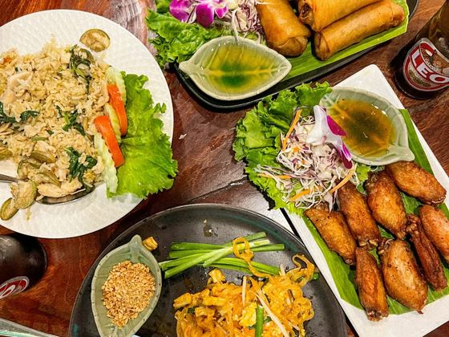
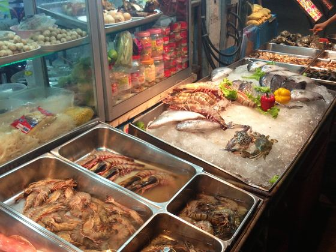
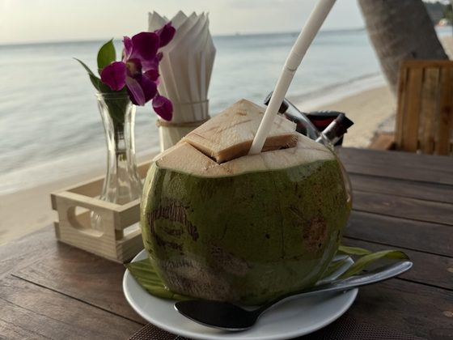
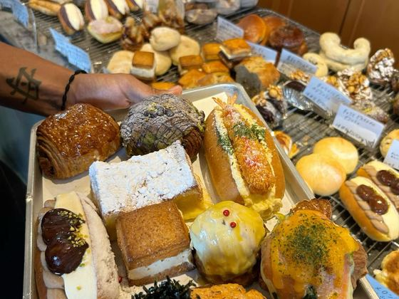

Where to Eat in Koh Samui
Coming from Europe, the thing that took longest to adjust to was that the best food here rarely looks like a restaurant. Some of my favourite meals on this island have come from a plastic table under a tarpaulin. So this list covers both — the places you'd book for a view, and the ones you'd walk past without a second glance.
How eating here actually works
Coming from Europe, the adjustment wasn't the spice — it was learning that price and appearance tell you almost nothing about how good the food will be.
Thai food, and where it actually is
The best Thai food here rarely looks like a restaurant. Some of my favourite meals on this island have come from a plastic table under a tarpaulin, ordered by pointing. If a place has a laminated menu with photos and someone outside waving you in, it is usually priced for tourists and cooked for tourists. Look for the ones full of Thai people at odd hours.

Street food and markets
Cheapest and often best. Every area has its market night, the fish markets are worth going to even if you're not buying, and the smoked and grilled stalls are where I eat most often. Bring small notes and eat standing up. If you're nervous about street food, follow the queue — high turnover means nothing sits around.

Breakfast and coffee
The thing that surprised me most. The café scene here is genuinely good, and there's proper coffee — flat whites, filter, roasters who care. Breakfast runs from Thai rice soup to a full brunch menu that wouldn't be out of place in Lisbon or Berlin. This is where I work most mornings.
Beachfront and view restaurants
You're paying partly for the setting, and that's a fair trade if you go in knowing it. Sunset tables need booking on the west side. Food quality varies enormously — some of the best kitchens on the island happen to have a view, and some of the worst charge the most for one.

Bakeries and European food
Worth saying plainly: you will not want Thai food for twenty-one meals a week, and there's no shame in that. There are French bakeries, Italian kitchens, sourdough, decent pizza, cheese that isn't sad. After three years I still have weeks where I mostly want bread and butter.

What's in the guide
The guide isn't only Thai food. Alongside the local kitchens, street food and markets, it lists the places I go when I want the food I was used to in Europe — bakeries, breakfast spots, proper coffee, and restaurants that get pizza and pasta right. Living somewhere is different from visiting it, and after a while you want both. There are beachfront tables and view restaurants in there too, for the evenings that are about the setting as much as the meal.
All of this in one PDF you can use offline.
Eight pages, 300+ places, no email needed. Save it to your phone before you fly — signal on the island is fine, but not everywhere.